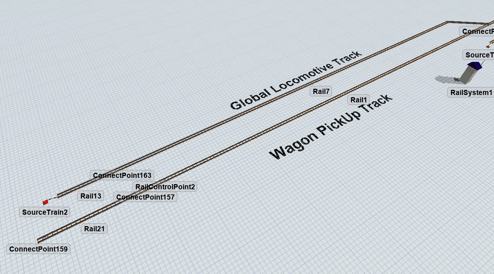
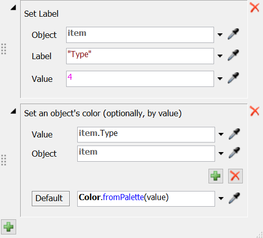
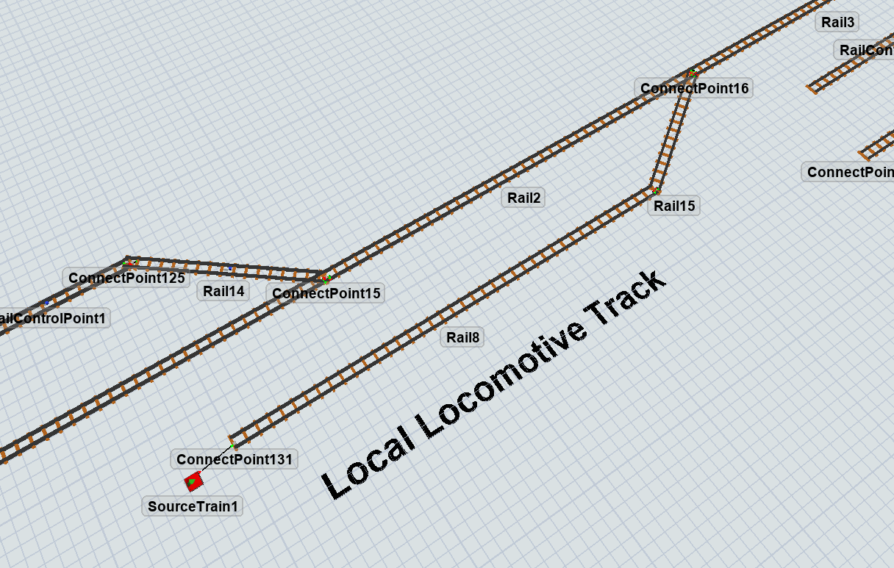
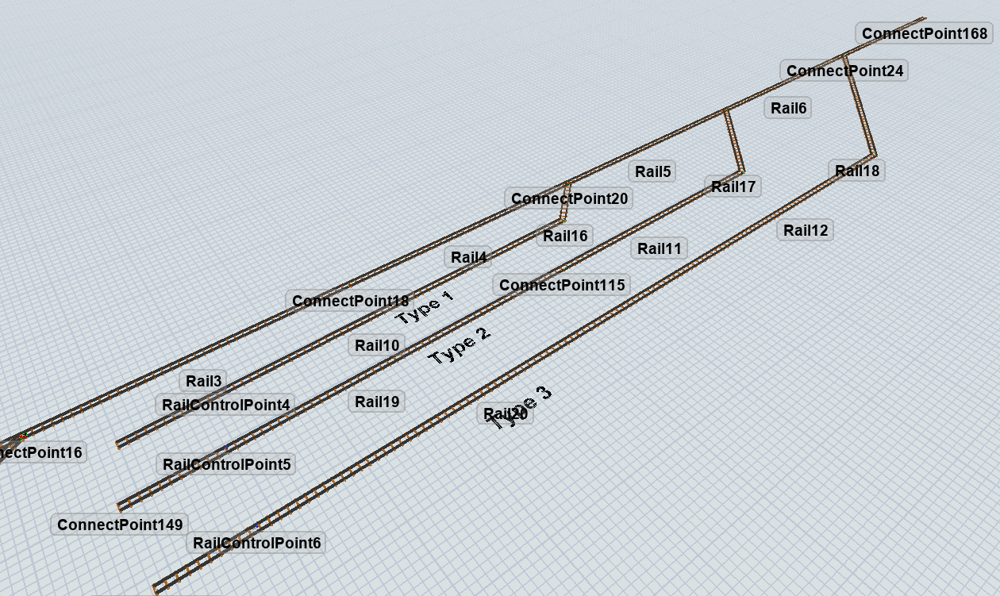
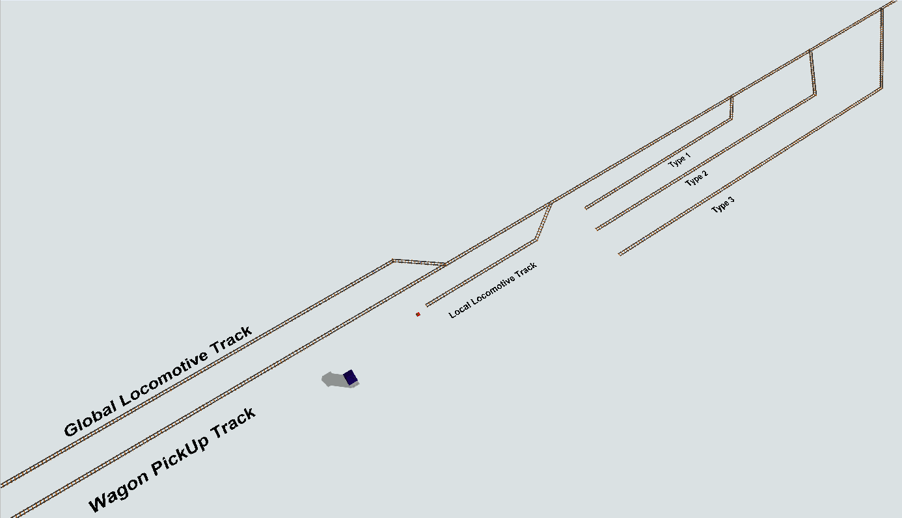
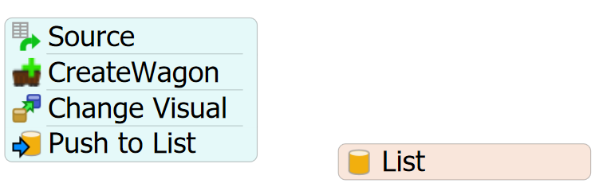
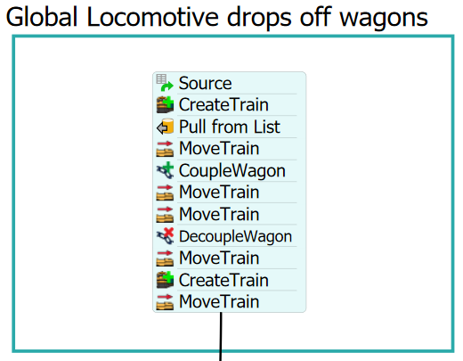
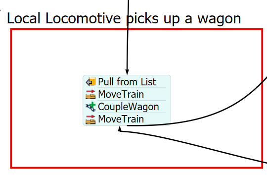
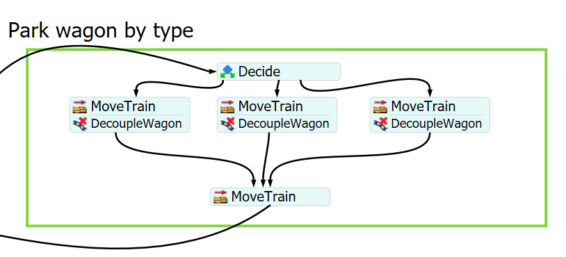
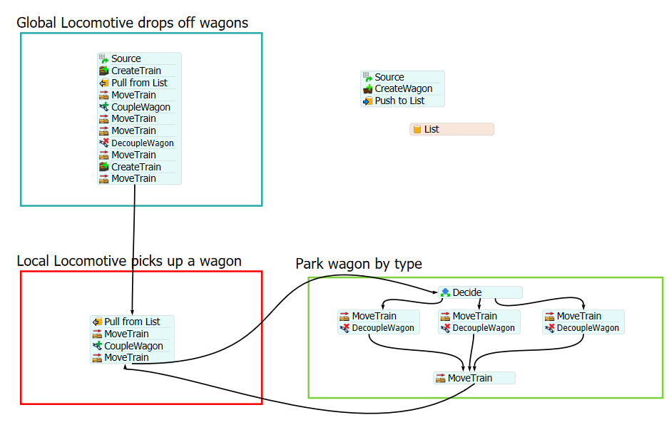

Exercise Information
A rail yard, railway yard, railroad yard (US), or simply yard, is a series of tracks in a rail
network used for storing, sorting, and loading and unloading rail vehicles and locomotives. This
model simulates the process of a local locomotive sorting six wagons based on their types (1, 2,
and 3). A global locomotive brings the wagons into the yard. Then, a local locomotive transports
each wagon individually to different destinations, determined by their respective types.
Step 1 Creating objects
To arrive at a solution for the problem, you should generate the following objects (refer to the
modeling pictures and videos for a more comprehensive grasp):
- Create five Rails: two of size 25m, two of size 150m, and one of approximately 15m.
- Pair the 25m and 150m Rails together, then connect both paths at the end with the 15m Rail.
- Create a SourceTrain and connect it to the first and leftmost Rail for the arrival of the global locomotive.
- Add a RailControlPoint at the end of the global locomotive track.
- Add another RailControlPoint at the beginning of the wagon pickup track.
The first part of your model should look like this:

Now, let's set up the items created in this step:
- Create an "On Exit" trigger on the SourceTrain.
- Configure the trigger to assign a label and set the color based on conditions.
- Add a label named "Type" with a value of 4.
- For color assignment based on conditions, use the "Type" label and select a color from the palette.

The next step is to configure the local locomotive track.
- Create three Rails: two of 40m and one of 15m.
- The first 40m Rail will extend the previous section, while the other 40m Rail will run parallel to it.
- The smallest Rail will connect the two ends, allowing the local locomotive to access the wagon pickup tracks.
- Add a SourceTrain connected to the end of the rightmost Rail (not connected to the main tracks).
- Configure the same triggers used for SourceTrain1 to SourceTrain2, using Type 7 for this locomotive.
The second part of your model should look like this:

The final step is to construct the yard for storing wagons by type.
- Create five 40m Rails to extend along the main tracks.
- Add three intersections to the last three Rails.
- Connect three parallel Rails (for types 1, 2, and 3) measuring at least 70m to the mentioned intersections.
- Attach one RailControlPoint to the leftmost tip of each parking track for every type.
- Include one RailControlPoint at the end of the main access track.
The last part of your model should be look like this:

Uniting the individual parts, your model should look like this.

Step 2 Processflow Configuration
To achieve the solution for the problem, follow these steps to create the
necessary processflow tasks:
Wagon Creation:
- Create a List resource.
- Create a Schedule Source.
- Create a "Create Wagon" activity.
- Create a "Change Visual" activity.
- Create a "Push to List" activity and link it to the list resource.
- Configure the Schedule Source with 6 entries, each generating 1 wagon at time 0.
- Configure the "Create Wagon" activity to generate only 1 wagon. Reference the
RailControlPoint placed at the end of the Global Locomotive track. Create the wagons
in reverse by checking the reverse checkbox.
- Set the Wagon/Car type to "Hopper Wagon" (thia allows for color changes). And on "Assign Labels to Created Objects",
create a label "Type" and assign a statistical distribution d uniform, with maximum value 3.
- Configure the "Change Visual" activity to Set Color By Case. Change the Value field to "token.wagon.Type" and
Object, "token.wagon" .
- Ensure the "Push to List" activity is linked to the list resource. Configure
Push Value to "token.wagon".
After completing these steps, your processflow should appear as follows:

Global Train Configuration:
- Create a Schedule Source.
- Create a "CreateTrain" activity.
- Create a "PullFromList" activity.
- Create a "MoveTrain" activity.
- Create a "CoupleWagon" activity.
- Create two sequential "MoveTrain" activities.
- Create a "DecoupleWagon" activity.
- Create another "CreateTrain" activity.
- Create another "MoveTrain" activity.
- Configure the Schedule Source to deliver 1 train with a 5-second offset.
- Configure the "CreateTrain" activity to reference the SourceTrain1 linked to
the Global Locomotive track.
- Configure the "PullFromList" activity to reference the list resource. Set the
request number and required number to 6. Assign the token to "token.wagon".
Check the "Leave Entries On List".
- Configure the "MoveTrain" destination to the label "token.wagon".
- Configure the coupling of your train to the wagons using their token labels.
- Configure the next "MoveTrain" activity to move to a forward rail (Rail4/Rail5 in
the image showing the main track), allowing all wagons to access the main track.
- Configure the second "MoveTrain" activity to park at the RailControlPoint on the
wagon pickup track.
- Configure the "DecoupleWagon" to set the control point to the one used for parking on wagon
pickup track.
- Configure the second "CreateTrain" activity to create a Local locomotive and set its
token differently from the previous one.
- Configure the last "MoveTrain" activity to use one of the main track rails setting the
destiny to the RailControlPoint at the end of the main track, enabling
the local locomotive's access to the main track with wagons.

Local Train Configuration:
- Create a "PullFromList" activity.
- Create a "MoveTrain" activity.
- Create a "CoupleWagon" activity.
- Create another "MoveTrain" activity.
- Configure the "PullFromList" activity to request 1 and require 1 from the list created
previously. Set the "Assign To" to "token.wagon2".
- Configure the "MoveTrain" activity to take the local train to the final destination,
using the wagon pulled from the previous activity with "token.wagon2" as destiny.
- Configure the "CoupleWagon" activity to couple with the pulled wagon.
- Configure the second "MoveTrain" activity to park at the RailControlPoint at the very
end (rightmost tip) of the main track.

Parking Wagons by Type Configuration:
- Create a "Decide" activity.
- Create three parallel "MoveTrain" activities.
- Create one "DecoupleWagon" activity for each "MoveTrain" activity.
- Create a final "MoveTrain" activity.
- Configure the "Decide" activity to send tokens to the "Connector By Case," using "token.wagon.Type"
and directing values from 1 to 3 to their respective connectors.
- Configure each "MoveTrain" activity to go to one of the RailControlPoints at each final parking
track.
- Configure the "DecoupleWagon" activity to decouple at each respective destination RailControlPoint.
- Configure the last "MoveTrain" activity to return the Local Locomotive to the RailControlPoint
at the end of the main track.
- Connect the end of the third part of the processflow to the second part.

After following these instructions, your processflow should be look like this.

With this configuration your model is ready.